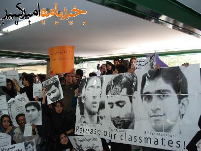
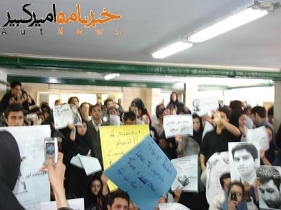
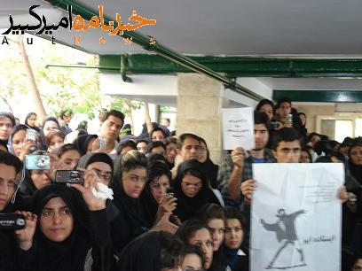

امروز سه شنبه، ۸ آبان ۱۳۸۶، تجمع و تریبون آزاد دانشجویی با حضور جمعیت ۱۰۰۰ نفری دانشجویان دانشگاه های تهران در دانشگاه علامه طباطبایی برگزار شد.

محور های این تجمع که در دانشکده علوم اجتماعی و ارتباطات دانشگاه علامه برگزار شد، بازداشت و صدور احکام سنگین برای دانشجویان، سلب حق تحصیل، پلیسی شدن فضای دانشگاه، سرکوب فزاینده تشکل های دانشجویی، اخراج اساتید، توقیف نشریات دانشجویی و… بود.
به گزارش خبرنامه امیرکبیر در ابتدای این مراسم یکی از دانشجویان دانشکده علوم اجتماعی علامه طی سخنانی اعلام کرد: «دانشجویان دیگر دانشگاه ها پشت در ایستاده اند و با مقاومت حراست رو به رو شده اند. نیروهای حراست به دانشجویان اجازه نمی دهد که وارد دانشگاه شوند.» دانشجویان تجمع کننده پس از این سخنان به سمت درب ورودی حرکت کردند. مقاومت نیروهای حراست و تلاش دانشجویان از دو سوی در ورودی برای ورود به دانشگاه موجب شکستن درب شیشه ای دانشگاه شد و دانشجویان موفق شدند وارد دانشگاه شوند.

تجمع کنندگان در حالی که پلاکاردهایی با مضامین «دانشگاه پادگان نیست»، «پول می دهیم تا سرکوبمان کنند»، «آزادی یعنی سکوت، آزادی یعنی اوین؟!»، «تعلیق، ستاره، اخراج مثلث افتخار دانشجو» و.. با خواندن سرود یار دبستانی و ای ایران و سر دادن شعارهای «دانشجوی می میرد، ذلت نمی پذیرد»، «دانشجو دانشجو حمایتت می کنیم»، «فرمانده پادگان این آخرین هشدار است، جنبش دانشجویی آماده قیام است» به سمت محوطه دانشکده حرکت کردند و در آن جا تجمع کردند.
در آغاز تریبون آزاد انجمن اسلامی دانشگاه علامه، سلیمان محمدی، به عنوان نماینده دانشکده علوم اجتماعی علامه، که به سه ترم محرومیت از تحصیل محکوم شده است با خواندن بیانیه ای، آغاز موج جدید فشار بر دانشجویان را محکوم کرد. بعد از آن آرمان صداقتی، عضو شورای مرکزی انجمن اسلامی دانشگاه امیرکبیر، بیانیه انجمن اسلامی این دانشگاه را در محکومیت صدور احکام سنگین برای سه دانشجوی در بند این دانشگاه قرائت کرد.
در بخشی از این بیانیه آمده است: «در حالی که تکذیب مدیران مسئول که با صدای نگران و چشمان بهت زده، مظلومانه و سراسیمه از این توطئه شوم اعلام نفرت و انزجار می کردند و تبری می جستند، گوش فلک را پر کرده بود، این صوت معصومانه را، راهی به مجریان عدالت! نبود که خداوند قلب و چشم گوششان را بسته که بارها نشان داده اند که بندگی خدا را وانهاده، سرسپردگی حاکمیت اقتدارگرا را به جان خریده اند. بیدادگران این بار هم تصمیم گرفتند که نشنوند و کسانی که بر مسند قضا تکیه زده اند در حالیکه دیگران را از روز جزا نهیب می زنند جایگاه پیامبری را به عروسک خیمه شب بازی ظالمان تنزل دادند و بی گناهان را مجرم نامیدند. اما با تکیه بر کدام مستندات؟ آیا مدرکی جز اعترافات تحت شکنجه های وحشیانه ی قرون وسطایی علیه دانشجویان دربند وجود دارد؟ کدام قانون شکنجه را برای حصول به نتیجه ی دلخواه مجاز می شمرد؟»
در ادامه این مراسم علی عبدی، از طرف انجمن اسلامی دانشگاه شریف اقدام به ایراد سخنرانی نمود. سپس مهدیه گلرو، عضو انجمن اسلامی دانشجویان دانشکده اقتصاد دانشگاه علامه، بیانیه کمیته زنان انجمن اسلامی این دانشگاه را در محکومیت حمله حراست به خوابگاه دانشجویان دختر قرائت کرد. در بخشی از این بیانیه آمده است: «با آغاز به کار دولتمردان نهم و انتصاب آیت الله شریعتی به ریاست دانشگاه علامه موجی از برخوردهای غیرقانونی با اساتید و دانشجویان دانشگاه علامه آغاز شد. اخراج، عدم تمدید قراداد و توهین به اساتید برجسته من جمله دکتر نمک دوست در کنار بازداشت دانشجویان، صدور احکام سنگین کمیته انظباطی برای بیش از ۳۰ نفر از فعالین دانشجویی در روزهای اخیر، توقیف نشریات، عدم صدور مجوز برای انجام برنامه های فرهنگی و تلاش برای انحلال انجمن اسلامی دانشجویان دانشگاه علامه طباطبایی واعمال شرم آوری مانند تعرض به دختران دانشجو توسط مامور حراست گوشه ای از وقایع روی داده در دو سال گذشته است.» در ادامه این بیانیه صدور احکام سنگین حبس برای دانشجویان امیرکبیر و احتمال انتقال آن ها به زندان قزل حصار نیز محکوم شده است.
کیوان امیری، یکی دیگر از دانشجویان، در ادامه این مراسم سخنرانی کرد. این دانشجو در سخنرانی خود حمله ماموران به خوابگاه دانشجویی دانشگاه بابلسر، رشد فضای سرکوب در دانشگاه، بستن انجمن های اسلامی، توقیف نشریات دانشجویی، بازداشت سه دانشجوی کرد دانشگاه علامه را محکوم کرد.
دانشجویان تجمع کننده به سمت درب ورودی حرکت کردند و در این حین نیروهای امنیتی که حضوری پرتعداد در دانشکده علوم اجتماعی علامه داشتند با دانشجویان تجمع کننده درگیر شدند. تریبون آزاد دانشجویی با سخنرانی عسل اخوان، امیر یعقوبعلی، شاهین زینعلی، مجید خمسه، مهدی شجاعی و علی وفقی، از طرف شورای مرکزی دفتر تحکیم وحدت و دانشجویان دانشکده علوم اجتماعی علامه، خواجه نصیر و دانشگاه آزاد به پایان رسید.
تجمع دانشجویان در حالی به پایان رسید که نیروهای امنیتی دانشگاه علامه را محاصره کردند و کلیه دانشجویانی که از دانشکده علوم اجتماعی خارج می شدند را دستگیر می کردند. طبق گزاشات رسیده نزدیک به ۲۰ نفر از دانشجویان دانشگاه تهران، علامه و پلی تکنیک دستگیر شده و به مکان نامعلومی منتقل شدند. جمعی از دانشجویان بازداشت شده پس از ساعتی آزاد شدند ولی آخرین گزارش ها حاکی از آن است که همچنان تعدادی از دانشجویان در بازداشت به سر می برند.
به گزارش خبرنامه امیرکبیر دانشجویان دانشگاه علامه در اعتراض به دستگیری گسترده دانشجویان اقدام به تحصن در صحن دانشکده علوم اجتماعی دانشگاه علامه کرده و اعلام کرده اند تا آزادی کلیه دانشجویان بازداشت شده در کلاس های درس شرکت نخواهند کرد. دانشجویان تجمع کننده شعار می دادند: «پینوشه، پینوشه ایران شیلی نمی شه»، «دانشجوی تعلیقی حمایتت می کنیم»، «محمود احمدی نژاد عامل تبعیض و فساد»، «مرگ بر دیکتاتور» و… . تا لحظه تنظیم این خبر جو داخل و خارج دانشکده علوم اجتماعی دانشگاه علامه به شدت متشنج گزارش می شود و دستگیری دانشجویان همچنان ادامه دارد.
خبرهای تکمیلی را در http://www.autnews.info/ بخوانید.
